한국사능력검정시험-심화 (2022-10-22 기출문제)
1. (가) 시대의 생활 모습으로 옳은 것은? [1점]
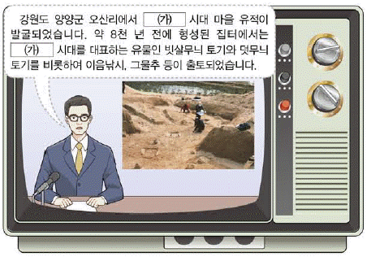
- 주로 동굴이나 막집에서 거주하였다.
- 고인돌, 돌널무덤 등을 축조하였다.
- 명도전을 이용하여 중국과 교역하였다.
- 농경과 목축을 통하여 식량을 생산하였다.
- 비파형 동검과 거친무늬 거울 등을 제작하였다.
(정답률: 86%)

2. (가) 나라에 대한 설명으로 옳은 것은? [1점]
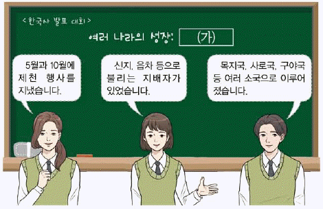
- 신성 지역인 소도가 존재하였다.
- 연의 장수 진개의 공격을 받았다.
- 혼인 풍습으로 민며느리제가 있었다.
- 여러 가(加)들이 별도로 사출도를 주관하였다.
- 특산물로 단궁, 과하마, 반어피가 유명하였다.
(정답률: 81%)
3. 다음 자료에 해당하는 국가에 대한 설명으로 옳은 것은? [2점]
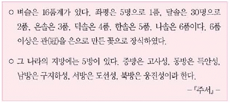
- 골품에 따라 관등 승진에 제한을 두었다.
- 제가 회의에서 국가 중대사를 결정하였다.
- 지방 장관으로 욕살, 처려근지 등이 있었다.
- 외화부, 영객부 등의 중앙 관서를 설치하였다.
- 왕족인 부여씨와 8성 귀족이 지배층을 이루었다.
(정답률: 60%)
4. 다음 검색창에 들어갈 왕에 대한 설명으로 옳은 것은? [2점]
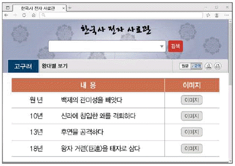
- 영락이라는 연호를 사용하였다.
- 태학을 설립하여 인재를 양성하였다.
- 낙랑군을 축출하여 영토를 확장하였다.
- 을파소를 등용하고 진대법을 시행하였다.
- 당의 침입에 대비하여 천리장성을 축조하였다.
(정답률: 82%)
5. (가) 인물의 활동으로 옳은 것은? [1점]
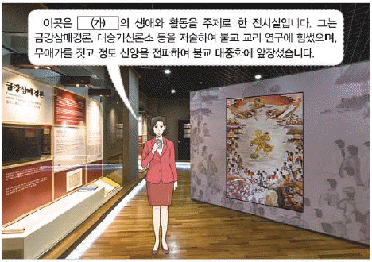
- 일심 사상과 화쟁 사상을 주장하였다.
- 구법 순례기인 왕오천축국전을 남겼다.
- 황룡사 구층 목탑의 건립을 건의하였다.
- 왕명으로 수에 군사를 청하는 걸사표를 지었다.
- 승려들의 전기를 정리한 해동고승전을 편찬하였다.
(정답률: 73%)
6. 다음 상황이 나타난 배경으로 옳은 것은? [3점]
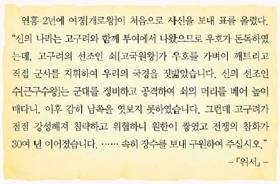
- 을지문덕이 살수에서 승리하였다.
- 동성왕이 나제 동맹을 강화하였다.
- 성왕이 관산성 전투에서 전사하였다.
- 계백의 결사대가 황산벌에서 패배하였다.
- 장수왕이 평양으로 천도하고 남진을 추진하였다.
(정답률: 74%)
7. (가), (나) 사이의 시기에 있었던 사실로 옳은 것은? [3점]
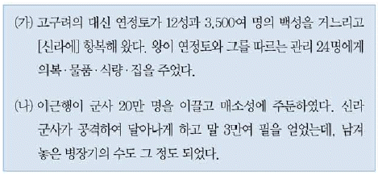
- 윤충이 대야성을 공격하여 함락하였다.
- 문무왕이 안승을 보덕왕으로 책봉하였다.
- 김춘추가 당과의 군사 동맹을 성사시켰다.
- 연개소문이 정변을 일으켜 권력을 장악하였다.
- 부여풍이 왜군과 함께 백강에서 당군에 맞서 싸웠다.
(정답률: 55%)
8. 다음 가상 대화 이후에 있었던 사실로 옳은 것은? [2점]
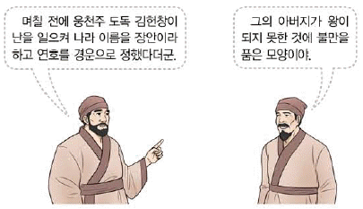
- 거칠부가 국사를 편찬하였다.
- 이사부가 우산국을 정복하였다.
- 관료전이 지급되고 녹읍이 폐지되었다.
- 원종과 애노가 사벌주에서 봉기하였다.
- 이차돈의 순교를 계기로 불교가 공인되었다.
(정답률: 62%)
9. 밑줄 그은 '왕'의 정책으로 옳은 것은? [1점]
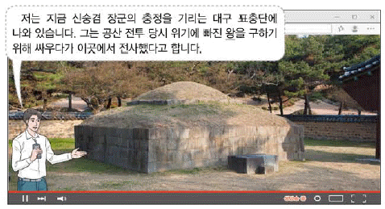
- 빈민 구제를 위해 흑창을 설치하였다.
- 12목에 지방관을 처음으로 파견하였다.
- 외침에 대비하여 개경에 나성을 축조하였다.
- 관학 진흥을 목적으로 양현고를 운영하였다.
- 쌍기의 건의를 수용하여 과거제를 시행하였다.
(정답률: 66%)
10. 다음 시나리오에 등장하는 왕의 업적으로 옳은 것은? [2점]
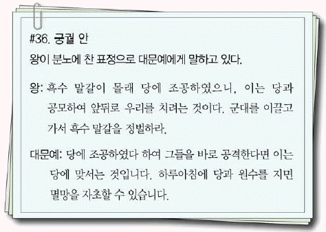
- 장문휴를 보내 등주를 공격하였다.
- 9서당 10정의 군사 조직을 갖추었다.
- 사비로 천도하고 국호를 남부여로 고쳤다.
- 지방관을 감찰하고자 외사정을 파견하였다.
- 고구려 유민을 모아 동모산에서 나라를 세웠다.
(정답률: 60%)
11. (가)에 들어갈 인물에 대한 설명으로 옳은 것은? [2점]
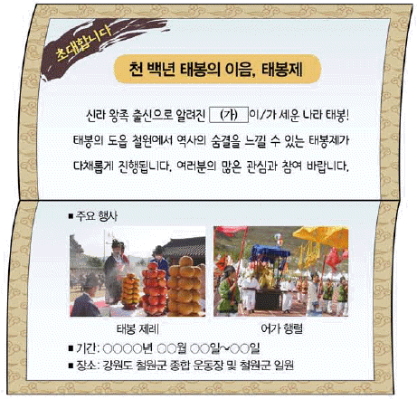
- 발해를 멸망시킨 거란을 적대시하였다.
- 미륵불을 자처하며 왕권을 강화하였다.
- 신라를 공격하여 경애왕을 죽게 하였다.
- 노비안검법을 시행하여 재정을 확충하였다.
- 청해진을 설치하여 해상 무역을 장악하였다.
(정답률: 72%)
12. 밑줄 그은 '이 사건'이 일어난 시기를 연표에서 옳게 고른 것은? [2점]
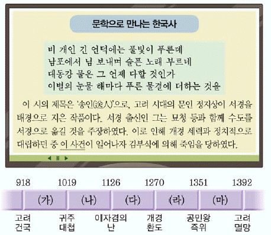
- (가)
- (나)
- (다)
- (라)
- (마)
(정답률: 67%)
13. (가), (나) 사이의 시기에 있었던 사실로 옳은 것은? [2점]
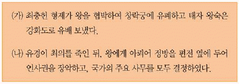
- 강조가 정변을 일으켜 김치양을 제거하였다.
- 배중손이 이끄는 삼별초가 진도에서 항전하였다.
- 만적이 개경에서 노비를 모아 반란을 모의하였다.
- 조위총이 군사를 일으켜 정중부 등의 제거를 도모하였다.
- 김보당이 의종 복위를 주장하며 동계에서 군사를 일으켰다.
(정답률: 53%)
14. 밑줄 그은 '이 시기'에 볼 수 있는 모습으로 옳은 것은? [1점]
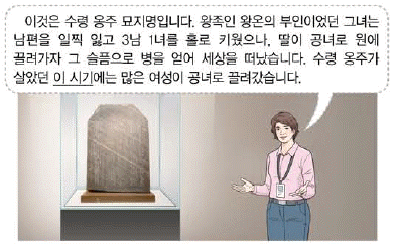
- 농사직설을 편찬하는 학자
- 초조대장경을 조판하는 장인
- 정동행성에서 회의하는 관리
- 삼강행실도를 읽고 있는 양반
- 백운동 서원에서 공부하는 유생
(정답률: 64%)
15. (가)~(라) 승려에 대한 설명으로 옳은 것은? [3점]
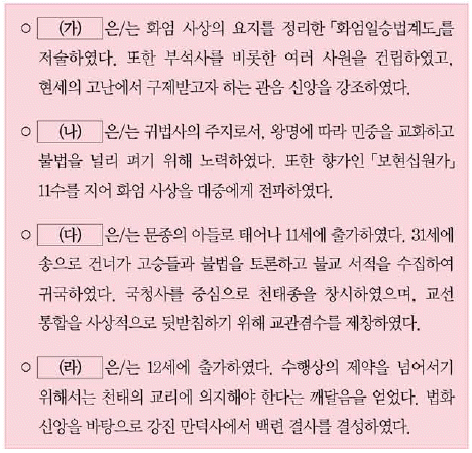
- (가) - 심성의 도야를 강조한 유불 일치설을 주장하였다.
- (나) - 정혜쌍수와 돈오점수를 수행 방법으로 제시하였다.
- (다) - 불교 경전에 대한 주석서를 모아 교장을 편찬하였다.
- (라) - 9산 선문 중 하나인 가지산문을 개창하였다.
- (가)~(라) - 승과에 합격하고 왕사에 임명되었다.
(정답률: 48%)
16. (가) 국가에 경제 상황으로 옳은 것은? [1점]
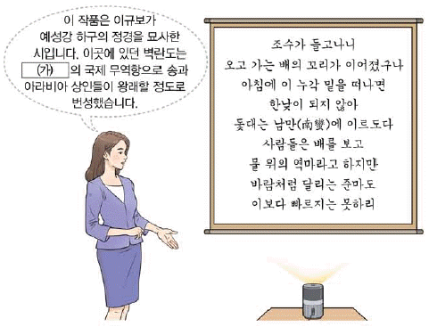
- 송상이 전국 각지에 송방을 두었다.
- 활구라고 불리는 은병을 주조하였다.
- 동시전을 설치하여 시장을 감독하였다.
- 담배, 면화, 생강 등 상품 작물을 널리 재배하였다.
- 일본과 교역을 위해 부산포, 염포, 제포를 개항하였다.
(정답률: 63%)
17. (가)에 대한 고려의 대응으로 옳은 것은? [2점]
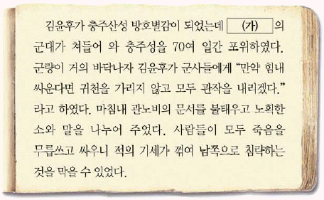
- 윤관을 보내 동북 9성을 축조하였다.
- 박위로 하여금 쓰시마섬을 정발하게 하였다.
- 서희가 외교 담판을 통해 강동6주를 획득하였다.
- 최우가 강화도로 수도를 옮겨 장기 항전에 대비하였다.
- 최영이 철령위 설치에 반발하여 요동 정벌을 추진하였다.
(정답률: 58%)
18. 밑줄 그은 '문화유산'으로 옳지 않은 것은? [3점]
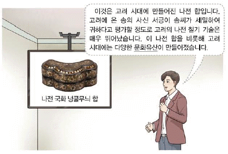
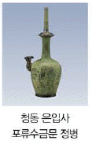
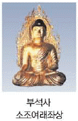
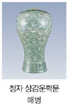
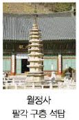
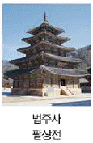
(정답률: 43%)
19. (가)에 들어갈 내용으로 가장 적절한 것은? [2점]
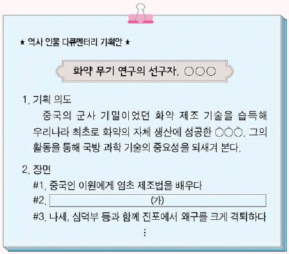
- 신기전과 화차를 개발하다
- 화통도감의 설치를 건의하다
- 불랑기포를 활용하여 평양성을 탈환하다
- 조총 부대를 이끌고 나선 정벌에 참여하다
- 발화 장치를 활용한 비격진천뢰를 발명하다
(정답률: 72%)
20. 다음 대화에 등장하는 왕의 재위 시기에 있었던 사실로 옳은 것은? [2점]
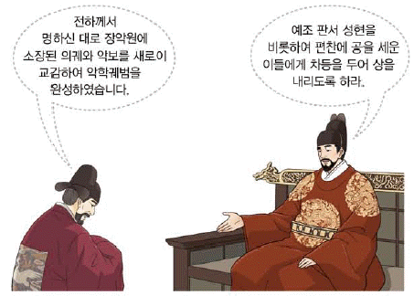
- 주자소가 설치되어 계미자가 주조되었다.
- 전통 한의학을 집대성한 동의보감이 완성되었다.
- 통치 체제를 정비하기 위해 속대전이 간행되었다.
- 한양을 기준으로 역법을 정리한 칠정산이 제작되었다.
- 전국의 지리, 풍속 등이 수록된 동국여지승람이 편찬되었다.
(정답률: 49%)
21. (가), (나) 사이의 시기에 있었던 사실로 옳은 것은? [3점]
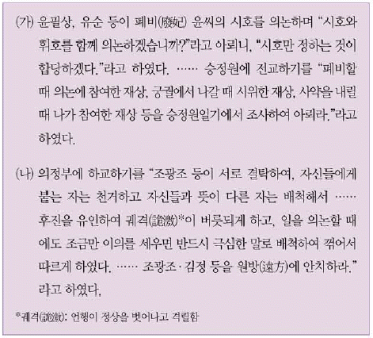
- 성삼문 등의 단종의 복위를 꾀하였다.
- 외척 간의 대립으로 윤임이 제거되었다.
- 이괄이 난을 일으켜 한양을 점령하였다.
- 성희안 일파가 반정을 통해 연산군을 몰아내었다.
- 조의제문이 발단이 되어 김일손 등이 화를 입었다.
(정답률: 51%)
22. (가) 기구에 대한 설명으로 옳은 것은? [2점]
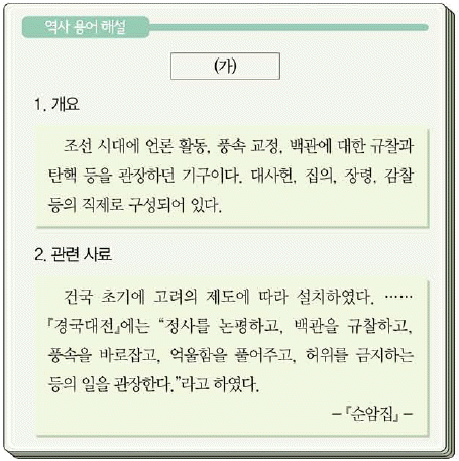
- 업무 일지인 내각일력을 작성하였다.
- 고려의 삼사와 같은 기능을 수행하였다.
- 은대(銀臺), 후원(喉院)이라고도 불리었다.
- 임진왜란을 거치면서 국정 전반을 총괄하였다.
- 5품 이하의 관리 임명에 대한 서경권을 행사하였다.
(정답률: 48%)
23. (가)~(다)를 일어난 순서대로 옳게 나열한 것은? [3점]
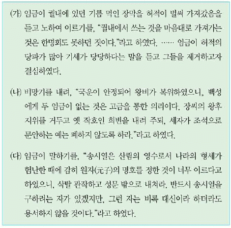
- (가) - (나) - (다)
- (가) - (다) - (나)
- (나) - (가) - (다)
- (나) - (다) - (가)
- (다) - (나) - (가)
(정답률: 52%)
24. 밑줄 그은 '전란' 중에 있었던 사실로 옳은 것은? [2점]
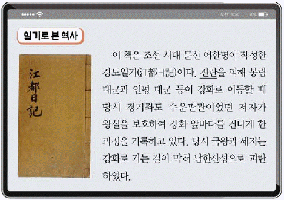
- 정문부가 길주에서 의병을 이끌었다.
- 강홍립이 사르후 전투에 참전하였다.
- 김시민이 진주성에 적군을 크게 물리쳤다.
- 임경업이 백마산성에서 적의 침입에 대비하였다.
- 최윤덕이 올라산성에서 이만주 부대를 정벌하였다.
(정답률: 42%)
25. 다음 기사에 나타난 시기의 경제 상황으로 옳은 것은? [2점]
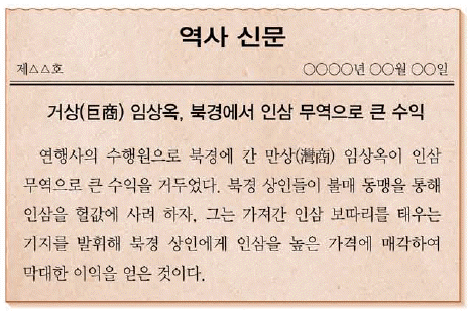
- 삼한통보, 해동통보가 발행되었다.
- 솔빈부의 말이 특산물로 수출되었다.
- 초량 왜관을 통해 일본과 교역하였다.
- 당항성, 영암이 국제 무역항으로 번성하였다.
- 경시서의 관리들이 수도의 시전을 감독하였다.
(정답률: 39%)
26. (가) 왕이 추진한 정책으로 옳은 것은? [1점]
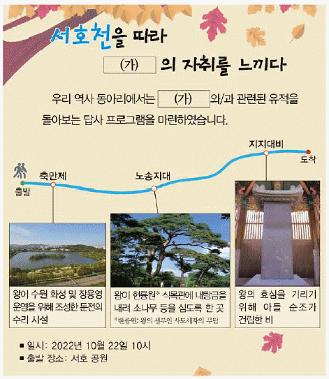
- 경기도에 한하여 대동법을 시행하였다.
- 군역 부담을 줄이기 위해 균역법을 제정하였다.
- 육의전을 제외한 시전 상인의 금난전권을 폐지하였다.
- 제한된 규모의 무역을 허용한 계해약조를 체결하였다.
- 현직 관리에게만 수조권을 지급하는 직전법을 실시하였다.
(정답률: 59%)
27. 다음 자료에 나타난 사건에 대한 설명으로 옳은 것은? [2점]
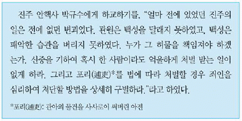
- 홍경래, 우군칙 등이 주도하였다.
- 남접과 북접이 연합하여 전개되었다.
- 삼정이정청이 설치되는 계기가 되었다.
- 우정총국 개국 축하연을 이용하여 일어났다.
- 윤원형 일파가 정국을 주도한 시기에 발생하였다.
(정답률: 59%)
28. (가) 인물의 작품으로 옳은 것은? [2점]
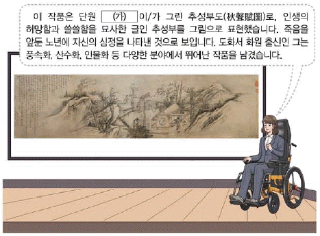
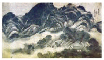
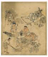
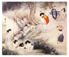
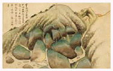
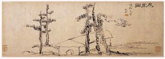
(정답률: 40%)
29. (가)~(라) 역사서에 대한 설명으로 옳은 것을 보기에서 고른 것은? [2점](29번 공통지문 문제)
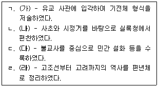
- ㄱ, ㄴ
- ㄱ, ㄷ
- ㄴ, ㄷ
- ㄴ, ㄹ
- ㄷ, ㄹ
(정답률: 31%)
30. (가) 사건 이후에 전개된 사실로 옳은 것은? [2점]
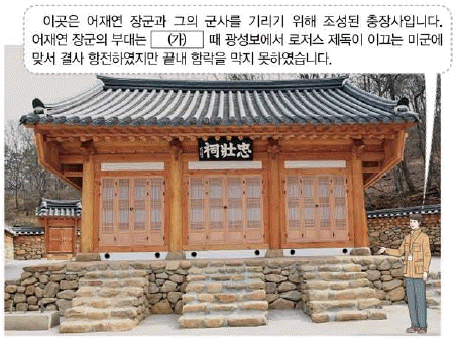
- 종로와 전국 각지에 척화비가 세워졌다.
- 평양 관민이 제너럴 셔먼호를 불태웠다.
- 한성근 부대가 문수산성에서 항전하였다.
- 신유박해로 많은 천주교도가 처형되었다.
- 오페르트가 남연군 묘 도굴을 시도하였다.
(정답률: 59%)
31. (가), (나) 조약 체결 사이의 시기에 있었던 사실로 옳은 것은? [3점]
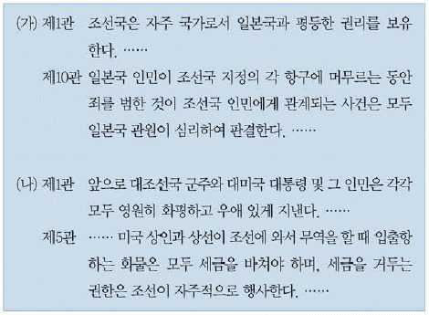
- 공사 노비법이 혁파되었다.
- 통리기무아문이 설치되었다.
- 한성 전기 회사가 설립되었다.
- 건양이라는 독자적인 연호가 채택되었다.
- 지방 행정 구역이 8도에서 23부로 개편되었다.
(정답률: 56%)
32. 다음 자료에 나타난 사건에 대한 설명으로 옳은 것은? [2점]
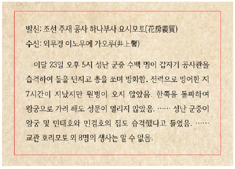
- 전주 화약이 체결되는 계기가 되었다.
- 입헌 군주제 수립을 목표로 전개되었다.
- 김기수가 수신사로 파견되는 결과를 가져왔다.
- 구식 군인에 대한 차별 대우가 발단이 되어 일어났다.
- 3일 만에 실패로 끝나 주동자들이 해외로 망명하였다.
(정답률: 52%)
33. (가) 인물에 대한 설명으로 옳은 것은? [2점]
- 국문 연구소의 연구위원으로 활동하였다.
- 조선어 학회 사건으로 구속되어 옥고를 치뤘다.
- 국권 피탈 과정을 정리한 한국통사를 집필하였다.
- 세계지리 교과서인 사민필지를 한글로 저술하였다.
- 여유당전서를 간행하고 조선학 운동을 전개하였다.
(정답률: 44%)
34. 다음 자료에 나타난 민족 운동에 대한 설명으로 옳은 것은? [2점]
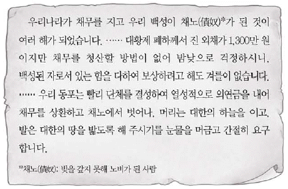
- 일제가 치안 유지법을 적용하여 탄압하였다.
- 백정에 대한 사회적 차별 철폐를 요구하였다.
- 독립문 건립을 위한 모금 활동을 전개하였다.
- 자작회, 토산 애용 부인회 등의 단체가 활동하였다.
- 대한매일신보 등 당시 언론이 적극적으로 참여하였다.
(정답률: 60%)
35. 밑줄 그은 '이 단체'에 대한 설명으로 옳은 것은? [2점]
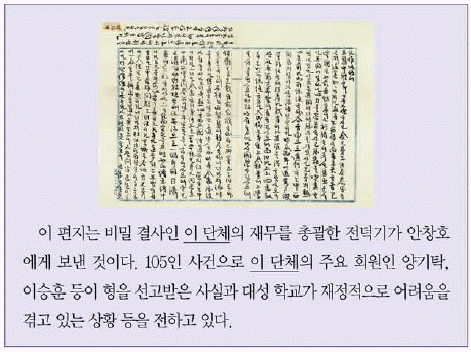
- 정우회 선언의 영향으로 결성되었다.
- 조선 혁명 선언을 활동 지침으로 삼았다.
- 일제의 황무지 개간권 요구를 저지하였다.
- 중추원 개편을 통해 의회 설립을 추진하였다.
- 계몽 서적의 보급을 위해 태극 서관을 운영하였다.
(정답률: 46%)
36. 밑줄 그은 '시기'에 볼 수 있는 모습으로 옳은 것은? [1점]
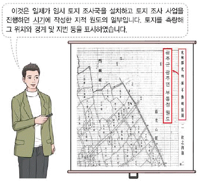
- 경성 제국 대학에서 공부하는 학생
- 근우회의 창립 기사를 작성하는 기자
- 보빙사 일행으로 미국에서 파견되는 관리
- 조선인에게 태형을 집행하는 헌병 경찰
- 거문도를 불법 점령하고 있는 영국 해군
(정답률: 62%)
37. (가) 단체에 대한 설명으로 옳은 것은? [2점]
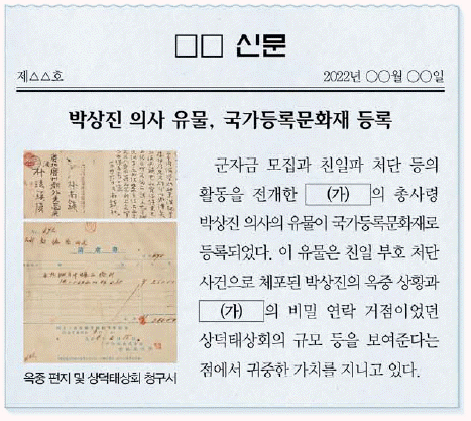
- 고종 강제 퇴위 반대 운동을 전개하였다.
- 공화정체의 국민 국가 수립을 목표로 삼았다.
- 파리 강화 회의에 독립 청원서를 제출하였다.
- 미군과 연합하여 국내 진공 작전을 계획하였다.
- 만민 공동회를 개최하여 민권 신장을 추구하였다.
(정답률: 31%)
38. (가) 운동에 대한 설명으로 옳은 것은? [1점]
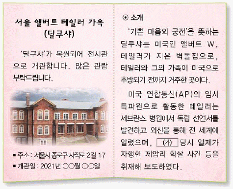
- 신간회에서 진상 조사단을 파견하여 지원하였다.
- 순종의 인산일을 기회로 만세 운동을 전개하였다.
- 일제가 이른바 문화 통치를 실시하는 배경이 되었다.
- 한국인 학생과 일본인 학생 간의 충돌에서 비롯되었다.
- 시위를 준비하는 과정에서 사회주의자들이 대거 검거되었다.
(정답률: 51%)
39. (가)에 대한 설명으로 옳은 것을 보기에서 고른 것은? [2점]
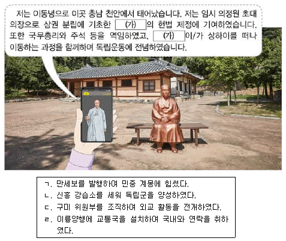
- ㄱ, ㄴ
- ㄱ, ㄷ
- ㄴ, ㄷ
- ㄴ, ㄹ
- ㄷ, ㄹ
(정답률: 42%)
40. 밑줄 그은 '시기'에 있었던 사실로 옳은 것은? [2점]
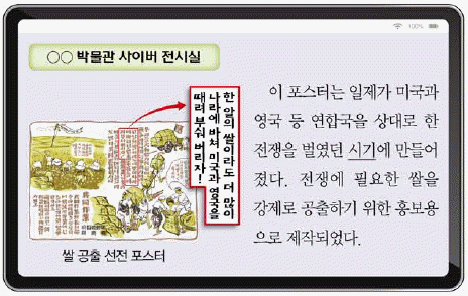
- 메가타의 주도로 화폐 정리 사업이 실시되었다.
- 만주 군벌과 일제 사이의 미쓰야 협정이 체결되었다.
- 여자 정신 근로령으로 한국인 여성이 강제 동원되었다.
- 자주 문재철의 횡포에 맞서 암태도 소작 쟁의가 전개되었다.
- 회사 설립 시 총독의 허가를 받도록 하는 회사령이 공포되었다.
(정답률: 57%)
41. (가)~(마)에 들어갈 내용으로 옳은 것은? [2점]
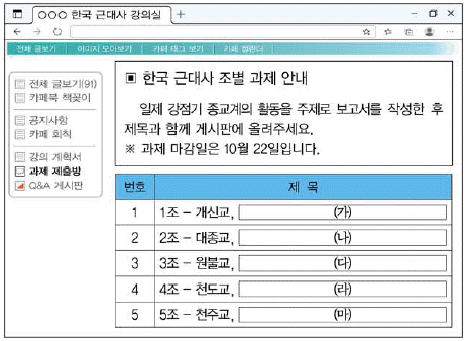
- (가) - 단군 숭배 사상을 통해 민족의식을 높이다
- (나) - 의민단을 조직하여 무장 투쟁을 전개하다
- (다) - 간척 사업을 진행하고 새생활 운동을 펼치다
- (라) - 배재 학당을 세워 신학문 보급에 기여하다
- (마) - 어린이날을 제정하고 소년 운동을 추진하다
(정답률: 34%)
42. (가) 부대에 대한 설명으로 옳은 것은? [3점]
- 자유시 참변으로 큰 타격을 입었다.
- 대전자령 전투에서 일본군을 격퇴하였다.
- 동북 항일 연군으로 개편되어 유격전을 펼쳤다.
- 김원봉, 윤세주 등이 중국 관내(關內)에서 창설하였다.
- 홍범도 부대와 연합하여 청산리에서 일본군과 교전하였다.
(정답률: 47%)
43. (가) 지역에서 있었던 민족 운동으로 옳은 것은? [2점]
- 권업회가 설립되어 권업신물을 발간하였다.
- 이봉창이 일왕의 행렬에 폭탄을 투척하였다.
- 박용만의 주도로 대조선 국민군단이 창설되었다.
- 북로 군정서가 조직되어 독립 전쟁을 전개하였다.
- 유학생들이 중심이 되어 2·8 독립 선언서를 발표하였다.
(정답률: 40%)
44. 밑줄 그은 '군정청'이 있었던 시기의 사실로 옳은 것은? [2점]
- 한미 상호 방위 조약이 체결되었다.
- 제1차 경제 개발 5개년 계획이 추진되었다.
- 반민족 행위 특별 조사 위원회가 설치되었다.
- 신한 공사가 설립되어 귀속 재산을 관리하였다.
- 국가 보안법 개정안을 통과시킨 보안법 파동이 일어났다.
(정답률: 25%)
45. (가) 전쟁 중에 있었던 사실로 옳지 않은 것은? [1점]
- 애치슨 선언이 발표되었다.
- 부산이 임시 수도로 정해졌다.
- 흥남 철수 작전이 전개되었다.
- 인천 상륙 작전 이후 서울을 수복하였다.
- 국회에서 국민 방위군 사건이 폭로되었다.
(정답률: 43%)
46. 다음 대화에 나타난 사건 이후의 사실로 옳은 것은? [3점]
- 내각 책임제 형태의 정부가 출범하였다.
- 정부에 비판적이던 경향신문이 폐간되었다.
- 최고 통치 기구인 국가 재건 최고 회의가 구성되었다.
- 평화 통일론을 주장한 진보당의 조봉암과 간부들이 구속되었다.
- 국회 해산, 헌법의 일부 효력 정지를 담은 10월 유신이 선포되었다.
(정답률: 34%)
47. 다음 자료에 나타난 민주화 운동에 대한 설명으로 옳은 것은? [2점]
- 허정 과도 정부가 출밤하는 계기가 되었다.
- 굴욕적인 한일 국교 정상화에 반대하였다.
- 호헌 철폐, 독재 타도 등의 구호를 외쳤다.
- 3·15 부정 선거에 항의하며 시위가 시작되었다.
- 관련 기록물이 유네스코 세계 기록 유산으로 등재되었다.
(정답률: 48%)
48. 다음 연설이 있었던 정부 시기의 경제 상황으로 옳은 것은? [2점]
- 처음으로 수출액 100억 달러가 달성되었다.
- 대통령 긴급 명령으로 금융 실명제가 실시되었다.
- 개성 공단 건설을 통해 남북 간 경제 교류가 이루어졌다.
- 한국과 미국 사이에 자유 무역 협정(FTA)이 체결되었다.
- 경제적 취약 계층을 위한 국민 기초 생활 보장법이 시행되었다.
(정답률: 57%)
49. 다음 뉴스가 보도된 정부 시기의 통일 노력으로 옳은 것은? [2점]
- 남북 조절 위원회를 구성하였다.
- 남북한이 유엔에 동시 가입하였다.
- 6·15 남북 공동 선언을 채택하였다.
- 한반도 비핵화 공동 선언을 발표하였다.
- 남북 이산가족의 교환 방문을 최초로 실현하였다.
(정답률: 49%)